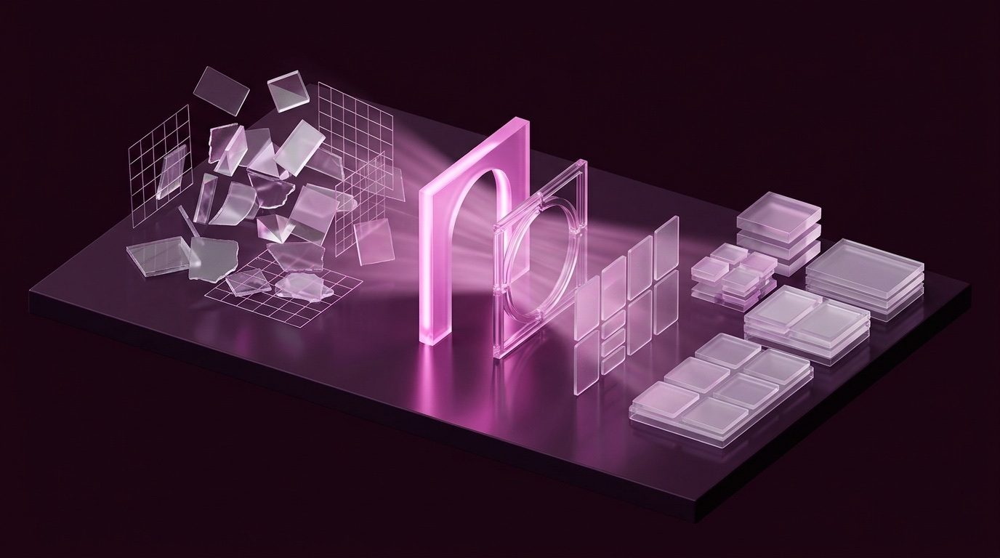

Turning real codebases, brand guidelines, and natural conversations into on-brand interactive prototypes, UX wireframes, executive slide decks, and product one-pagers—with live Control Knobs and Figma or Claude Code handoffs.
Generic AI UI generators invent throwaway buttons and mismatched fonts on every prompt. Anthropic Labs built Claude Design as an interactive visual prototyping studio grounded in your team’s living Design System—so conversational ideas look and behave like your actual product from Draft 1.
Instead of treating every layout like a disconnected drawing, Claude Design separates visual authoring into two coordinated layers: a persistent Design System Registry (ingesting your color tokens, typography scale, spacing rhythm, and mapped React or Figma primitives) and a Live Generative Canvas powered by vision-capable Claude Opus models. Product managers, founders, designers, and engineers can co-create clickable prototypes, multi-screen wireframes, executive slide decks, and product one-pagers that remain strictly faithful to brand rules.
Born in Anthropic Labs, Claude Design runs natively inside main claude.ai (chat & Artifacts tab), Claude Desktop, mobile apps, and Claude Code (/design)—as standalone claude.ai/design closes on Dec 14, 2026.
Organization settings → Artifacts) and standalone access are off by default until an owner enables them.claude.ai/design design systems before Dec 14, 2026 closure (migrated standalone kits turn read-only; standalone chats, comments, and links stop working)./design and /design-sync.claude.ai Artifacts tab or prompt in chat (and migrate pre-Dec 14 standalone claude.ai/design kits via the built-in tool)./design or /design-sync in your frontend repo so Claude imports tokens.json, Tailwind config, and shadcn/ui primitives.tokens.json + brand PDF).
2. Inspect extracted color palette, typography ramp, spacing scale, and component primitives.
3. Click Publish to Team Workspace so every teammate’s prompts inherit approved brand styling automatically.
| Tool / Surface | Best-Fit Output | Brand & Token Fidelity | Live Editing Controls | Handoff & Code Parity |
|---|---|---|---|---|
| Claude Design Visual Prototyping Studio |
Clickable prototypes, multi-screen wireframes, exec decks & one-pagers. | Highest AI Fidelity: Locked to ingested repo, tokens.json & brand PDFs. |
Live Control Knobs: Density, theme, type scale, radii, variants + inline pins. | Bidirectional: Figma MCP / Code Connect, Claude Code, Gamma & web. |
| Claude Whiteboards Spatial Thinking Canvas |
Voice-to-board brainstorms, sticky clusters, swimlanes & retros. | Semantic Stickies: Color-coded by risk, owner & team rather than brand UI. | Region-Box AI: Lasso corner clusters and co-edit stickies with live cursors. | Planning Export: Converts to Claude Docs, Slides, Lucid, Miro & Vani. |
| Figma Canonical Design Suite |
Pixel-precision vector libraries, master design systems & multi-team critiques. | Source of Truth: Authoritative variables, branching & component specs. | Manual Vector & Auto-Layout: Full frame-by-frame designer control. | MCP + Code Connect: Feeds real components directly to Claude Design & Code. |
| Standard React Artifacts Single-File Code Previews |
Quick calculators, data charts & single-turn functional utilities. | Ad-Hoc Styling: Uses default Tailwind classes unless manually pasted per chat. | Re-Prompt Only: No live Control Knobs panel or canvas element pinning. | Copy-Paste JSX: Single component snippet; no Figma or Gamma pipeline. |
shadcn/ui library, then export to Figma for polish or straight into Claude Code for production wiring.
Every Claude Design session unites three live panels: a brand-aware prompt and comment stream on the left, an interactive clickable preview canvas in the center, and real-time Control Knobs on the right.
Card and Badge tokens.”
--accent-orchid.
tokens.json, or brand PDF governs every token and primitive on screen.
v1..vN): Every major iteration saves a non-destructive checkpoint so you can compare directions cleanly.
.pptx, PDF, and headless web bundles.
The secret to shipping production-grade visuals in Claude Design happens in the first two minutes. During onboarding, Claude ingests your actual frontend codebase and brand assets to construct a reusable Design System that governs every prototype, deck, and one-pager.

shadcn/ui component signatures into one persistent workspace Design System.
shadcn/ui Primitives
Point onboarding at your React and Tailwind repository (or run /design-sync from Claude Code). Claude indexes your real Button, Card, Input, and Dialog props so prototypes mirror production components instead of inventing generic HTML tags.
tokens.json & CSS Vars)
Import W3C tokens.json or globals.css files. Claude locks semantic surfaces (--bg-card, --accent-primary), type ramps, 4px/8px spacing multiples, and border radii into the Design System registry.
No code repo yet? Upload a brand guideline PDF, SVG logo marks, marketing brief, or two screenshots of your live app. Claude infers color roles, visual tone, and editorial hierarchy into a shareable starter kit.
DESIGN.md Rule LayerAttach crisp plain-English guardrails alongside tokens—for example, “reserve berry-pink exclusively for primary CTAs, keep data tables borderless, and never use gradients behind body copy.”
# Recommended Onboarding Sequence (Codebase + Brand Brief):
1. Open Claude Code in your web repo and run: /design-sync (indexes tailwind.config, tokens.json, components/ui/*)
2. Upload Brand_Guidelines_2026.pdf + Product_Voice_Brief.md inside claude.ai Design onboarding (Artifacts tab)
3. Inspect the generated Design System preview (Colors, Type Scale, Spacing, Primitives) → Click "Lock & Publish"surface-subtle, border-focus, text-secondary) rather than pink-500 or gray-100. Semantic naming guarantees that toggling Light and Dark Control Knobs preserves accessible contrast automatically.
Once your Design System is locked in, a single workspace switches smoothly across four core output formats—serving product, design, engineering, and marketing workflows without shifting tools.
Working multi-step web and app prototypes with real hover states, clickable tabs, conditional modals, and responsive mobile views—ideal for stakeholder demos, user testing, and direct Claude Code handoffs.
Rapid 4-to-12-screen architectural flows (such as Onboarding, Empty States, Error Recovery, and Checkout) focused on information hierarchy and navigation logic before investing in high-fidelity graphics.
Board readouts, GTM launches, and customer pitch decks laid out with crisp KPI grids, visual comparison cards, and consistent brand headers—exportable directly to .pptx, PDF, or Gamma.
High-polish launch briefs, pricing comparison pages, and solution summaries adhering strictly to brand typography and voice—exportable as print PDFs or clean headless web blocks.
Combining these five color-coded prompt blocks generates on-brand, interactive layouts with ready-to-use Control Knobs on the very first pass:
shadcn/ui Tabs, Card, Badge + tokens.json)
[3. Screen Flow & Content] guiding a new workspace admin through Team Name → Repo Sync → Role Permissions → Ready Confirmation with real Back/Continue navigation and realistic sample data.
[4. Control Knob Defaults] Expose live Control Knobs for Layout Density (start Balanced), Light/Dark Mode, Typography Scale, Border Radius, and Card Variant.
[5. Parity & Handoff Guardrail] Use zero custom hex overrides so every screen passes WCAG AA contrast and exports cleanly to Figma Code Connect and Claude Code.
| Prompt Component | What It Controls in the Studio | Failure Mode When Omitted |
|---|---|---|
| Deliverable Mode & Viewport | Selects Prototype, Wireframe, Slide Deck, or One-Pager + target screen sizes. | Claude guesses a static marketing sheet when you wanted clickable app screens. |
| Bound Design System | Locks active palette, typography scale, and exact shadcn/ui or Figma primitives. |
Generic blue buttons and unmapped CSS appear, breaking Code Connect parity. |
| Screen Flow & Content | Defines exact screen sequence, interactive states, and domain-specific sample data. | Outputs 1 disconnected screen filled with shallow placeholder copy. |
| Control Knob Defaults | Generates tailored live sliders and toggles in the right-hand inspector. | Requires manual chat prompts every time you want tighter padding or dark mode. |
| Parity & Handoff Guardrail | Enforces semantic tokens, accessibility contrast, and clean export structure. | Hard-coded colors break Dark Mode toggles and force manual rewrite in Claude Code. |
Traditional AI chat tools punish small visual tweaks: asking to “make cards slightly tighter and softer” often triggers a slow full-screen rewrite that scrambles copy you already approved. Claude Design gives you three fast, surgical refinement levers.
Drag dynamic sliders generated directly alongside your preview to adjust layout density, light/dark polarity, type scale, corner radius, spacing rhythm, and component variants instantaneously—zero code edits needed.
Click any individual badge, navbar, or pricing card on canvas to attach a targeted comment pin. Claude modifies only that anchored element subtree while keeping surrounding screens untouched.
Click straight into headlines, button labels, or table columns to edit wording manually or reorder cards in place without spending another prompt turn.
| Control Knob | Live Range / Options | When & Why to Dial It During Review |
|---|---|---|
| Layout Density | Compact ↔ Balanced ↔ Airy |
Slide toward Compact for dense B2B dashboards and data tables; slide to Airy for executive one-pagers and marketing heroes. |
| Light / Dark Mode | Light • Dark • High-Contrast |
Test semantic tokens.json surface swaps live in front of stakeholders to catch unreadable borders or muted badge contrast early. |
| Typography Scale | 0.90x – 1.30x ratio slider |
Scale headline drama upward for slide decks and landing pages, or tighten heading ratios so multi-pane app screens fit without vertical scrolling. |
| Radius & Spacing | 2px Sharp – 16px Pill |
Tune corner softness and card-to-card gutter rhythm uniformly across every button, modal, and input box in a single drag. |
| Component Variant | Minimal | Elevated | Outlined |
Cycle through mapped shadcn/ui or Figma Code Connect styles without rewriting component props or losing interactive states. |
Before dialing details, prompt: “Generate 3 structural variants of this dashboard side by side: (A) left sidebar rail, (B) top tabbed bar, and (C) split master-detail drawer.” Pick the strongest layout skeleton, lock a vN snapshot, and only then refine proportions with Control Knobs and inline comment pins.
#ff0099 on one card, that element stops responding smoothly to Light/Dark Mode knobs. Always request semantic overrides such as “swap Card 2 border to --border-accent-strong.”
Design momentum collapses when prototypes stay trapped as throwaway mockups. Claude Design provides clean round-trip bridges into Figma, Claude Code, Gamma, and modern headless web architectures.
<Button />, <DataTable />) so generated prototypes use real production imports.shadcn/ui component bundles straight into a Claude Code session (or via /implement-design) to wire live APIs and tests..pptx, PDF, and Canva-ready assets) with slide hierarchy intact.| Target Platform | Recommended Handoff Trigger | What Carries Over & Ideal Next Step |
|---|---|---|
| Figma (Bidirectional) | Export → Send to Figma (MCP / Auto-Layout) |
Editable auto-layout frames, token variables, and Code Connect component links for design-system polish. |
| Claude Code | Hand off to Claude Code / .zip JSX bundle |
Repo-matched React + Tailwind + shadcn/ui components ready for API wiring, state hooks, and PR review. |
| Gamma / PPTX / PDF | Export → Gamma or .pptx / Print PDF |
Structured slide acts, narrative callouts, and brand-locked headers for leadership pitches and board meetings. |
| Headless Web Stack | Export → HTML/JSON Bundle |
Clean semantic sections, responsive grid tokens, and reusable marketing blocks for Next.js or headless CMS stacks. |
Paste any recipe below into Claude Design with your published Design System active to produce high-precision prototypes, UX wireframes, slide decks, product one-pagers, or Figma-to-Code round-trips immediately.
| Recipe & Use Case | Copy-Paste Prompt (Zero Ambiguous Placeholders) | Output & Next Move |
|---|---|---|
| 1. Repo-Synced Interactive Prototype Product & Eng |
Build a 3-screen interactive Seat Billing & SSO Settings prototype bound to our Acme UI Design System (shadcn/ui Tabs, Table, Dialog + tokens.json). Include realistic member rows, an active seat-limit warning modal, and working Light/Dark, Density, and Radius Control Knobs. Keep all imports repo-valid for Claude Code handoff. |
Clickable React/shadcn/ui prototype; dial knobs live, then hand straight to Claude Code. |
| 2. Multi-Screen UX Wireframe Flow UX Architecture |
Switch to Multi-Screen Wireframe mode and map a 6-screen responsive onboarding journey (Welcome → Connect GitHub → Pick Tokens → Preview Theme → Invite Team → Empty Dashboard). Include mobile breakpoints, loading skeletons, and explicit error-recovery states, with a Layout Density Control Knob. |
6-screen desktop/mobile blueprint ready for inline pin critique before visual polish. |
| 3. Executive Launch Slide Deck Leadership & PM |
Convert our Q3 Launch PRD attached in this Project into an 8-slide Executive Deck using our Brand Design System. Structure slides as: Title Hero, Customer Pain, Product Demo Flow, Adoption Metrics, Competitive Grid, Architecture Summary, GTM Timeline, and Budget Ask. Expose Type Scale and Density Control Knobs. |
Brand-locked 8-slide deck; export directly to Gamma or .pptx for VP readout. |
| 4. Product One-Pager & Pricing Sheet Product Marketing |
Design a crisp 1-page Enterprise Security Datasheet and 3-tier Pricing Comparison bound to our official Brand PDF and tokens.json. Include a top value summary, 3 proof pillars, a clean feature comparison grid, and an executive CTA footer. Expose Compact/Airy Density and Card Variant Control Knobs. |
Sales-ready PDF one-pager + clean headless HTML/JSON section blocks for web launch. |
| 5. Figma Code Connect Round-Trip Design Systems |
Read our linked Checkout Card frame via the Figma MCP server and match every button, badge, and input to our repo's Code Connect mappings. Generate 2 responsive interactive promo-code state variants using tokens.json only, then prepare an editable auto-layout export for Figma plus JSX diff for Claude Code. |
Bidirectional sync keeping Figma layers and production React primitives 100% aligned. |
v4), then toggle mobile preview with tighter density (save v5) so developers inspect both responsive snapshots.
Interactive prototypes often reveal unannounced features, pricing models, and proprietary design tokens. Claude Design enforces org-scoped sharing boundaries, role-based review controls, and Design System governance across every tier.
Organization settings → Artifacts (off by default on Enterprise), custom RBAC roles, and shared publishing rules.tokens.json schemas, brand PDFs, and generated designs are never used to train Anthropic models.| Capability / Guardrail | Free, Pro, Max & Ultra | Team Plan | Enterprise Plan |
|---|---|---|---|
| Studio Access & Roles | Included (Free subject to msg limits) | On by default; shared Projects | Off by default (standalone); owner-enabled in Org settings |
| Design System Governance | On by default (Pro/Max/Ultra kits) | On by default; shared team libraries | Off by default (Org settings → Artifacts); owner approval |
| Prototype Link Scope | Private or shareable preview link | Workspace-authenticated View/Comment/Edit | Strict SSO-only org scoping + audit logs |
| Figma, Gamma & Code Sync | User OAuth / local repo sync | Team connector policy | Admin MCP allowlist + DLP/egress controls |
When syncing a repository via /design-sync or GitHub onboarding, include only frontend styling and primitive directories (tokens.json, tailwind.config.*, src/components/ui/). Never attach .env secrets, private backend credentials, or real customer database exports into a visual Design System context.
.zip bundles for external user research, instruct Claude Design: “Replace all sample account names, revenue figures, and email strings with realistic synthetic fixtures.”
Claude Design acts as the visual synthesis hub in Anthropic’s wider ecosystem—converting early strategy from Claude Meetings, Projects, and Whiteboards into living prototypes that flow smoothly into Figma, Gamma, Claude Code, and Claude Security.
Take an approved user journey from Claude Whiteboards and customer insights from your Claude Project, then prompt Claude Design to render an interactive multi-screen flow locked to your active Design System.
Tune layout density and dark mode live with stakeholders, drop inline pins on copy edge cases, and push editable auto-layout layers to Figma with real Code Connect mappings intact.
In the same project thread, ask Claude Design to package the finalized product concept into an executive slide deck (exported to Gamma or .pptx) plus a headless web launch one-pager.
Send exported React + Tailwind + shadcn/ui components directly to Claude Code to wire live endpoints, then verify auth and XSS safety through Claude Security before merging.
tokens.json, run /design-sync again so Claude Design, Figma Code Connect, and Claude Code never drift out of sync.
Use this diagnostic reference whenever generated screens drift off-brand, Control Knobs behave unexpectedly, or a Figma/Code handoff needs repair—followed by our 6-point launch checklist.
| Symptom / Issue | Root Cause | 10-Second Fix |
|---|---|---|
| 1. Generated UI looks generic and ignores brand fonts/colors | Prompted inside an isolated chat with no active Design System bound. | Complete codebase/brand onboarding (attach tokens.json, Tailwind config & brand PDF), select your published Design System pill, and regenerate. |
| 2. Dark Mode Control Knob leaves bright white blocks or unreadable text | Hard-coded hex values (like #ffffff) injected during a manual chat tweak. |
Prompt: “Audit all components and replace hard-coded hex colors with semantic surface, border, and foreground variables from tokens.json.” |
| 3. Figma export lands as flat images instead of editable layers | Downloaded static PNG/PDF snapshot or skipped Figma MCP / conversion bridge. | Connect the official Figma MCP server, enable Code Connect mappings, or export via the HTML-to-Figma auto-layout layer pipeline. |
| 4. Small copy or card tweak accidentally rewrote surrounding screens | Issued a broad conversational prompt instead of targeting one element. | Step back one version via the v1..vN selector, click directly on the target component to drop an Inline Comment Pin, and re-apply locally. |
| 5. Expected Control Knobs sliders are missing from the right panel | Initial prompt omitted adjustable design parameters. | Ask in chat: “Expose live Control Knobs for layout density, light/dark mode, typography scale, border radius, and card variant.” |
| 6. Claude Code rewrites exported JSX instead of reusing repo components | Design System lacked exact component paths or Code Connect signatures. | Run /design-sync inside your frontend repo to index shadcn/ui and local component props, then re-export the React bundle. |
| 7. Reviewer hits “Access Denied” on a shared prototype link | Org-scoped SSO protection blocked a personal account or external email. | Ask the reviewer to sign in with corporate SSO, or request an Enterprise admin to approve external View/Comment link sharing if policy allows. |
tokens.json, Tailwind config, and brand PDFs are active before generating Screen 1.vN snapshot prior to testing extreme knob settings or new layouts.